방어구
투구32
| 아이템 | AC | 효과 | 재질 | 무게 | 클래스 | 착용레벨 | 안전인첸 |
|---|---|---|---|---|---|---|---|
| 0 | 세트(4) AC -3 | 가죽 | 10 | 0 | 0~4강 | ||
| -1 | — | 가죽 | 30 | 0 | 0~4강 | ||
| -3 | 세트(5) AC -3 | 철 | 50 | 0 | 0~4강 | ||
| -1 | — | 천 | 0 | 0 | 인첸불가 | ||
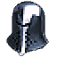 기사의 면갑 | -3 | — | 철 | 40 | 0 | 0~4강 | |
| -2 | 세트(3) AC -1, 최대 HP +5 | 철 | 40 | 0 | 0~4강 | ||
| 데스나이트의 투구 | -3 | 세트(4) AC -4, 데스나이트 변신 | 철 | 50 | 0 | 0~4강 | |
| -2 | 세트(2) MP회복 +1, 최대 MP +50 | 천 | 20 | 0 | 0~4강 | ||
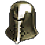 마법의 투구: 신속 | -1 | 미스릴 | 50 | 0 | 0~4강 | ||
| -1 | 미스릴 | 50 | 0 | 0~4강 | |||
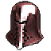 마법의 투구: 힘 | -1 | 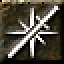 | 미스릴 | 50 | 0 | 0~4강 | |
| +1 | CHA +1 | 가죽 | 10 | 0 | 0~4강 | ||
| -2 | INT +1 | 천 | 20 | 0 | 0~4강 | ||
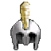 민첩함의 투구 | -1 | DEX +1 | 가죽 | 13 | 15 | 0~6강 | |
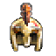 반왕의 투구 | -3 | 세트(4) HP회복 +7, AC -3, 켄 라우헬 변신 | 금 | 15 | 0 | 0~4강 | |
| 발터자르의 모자 | -2 | MP회복 +5 | 천 | 20 | 0 | 0~4강 | |
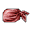 붉은 기사의 두건 | -2 | — | 천 | 20 | 0 | 0~6강 | |
| 세마의 모자 | -2 | MP회복 +2, 최대 MP +15 | 천 | 20 | 0 | 0~4강 | |
| 엘름의 축복 | -2 | DEX +1 | 가죽 | 13 | 0 | 0~6강 | |
| -1 | 세트(4) AC -3 | 철 | 30 | 0 | 0~4강 | ||
| -1 | — | 가죽 | 3 | 0 | 0~6강 | ||
| 0 | 오염된 바람 정령 시야 | 보석 | 0 | 0 | 인첸불가 | ||
| -2 | 세트(4) AC -3 | 가죽 | 20 | 0 | 0~4강 | ||
| 짙푸른 해적 두건 | -3 | 세트(4) AC -7 | 가죽 | 20 | 0 | 0~4강 | |
| 체력의 투구 | -1 | CON +1 | 가죽 | 13 | 15 | 0~6강 | |
| 카스파의 모자 | -2 | 최대 MP +25 | 천 | 20 | 0 | 0~4강 | |
| -3 | 세트(4) AC -4, 커츠 변신 | 철 | 50 | 0 | 0~4강 | ||
| 케레니스의 서클릿 | -3 | 세트(4) MP회복 +12, AC -2, 최대 MP +100, 케레니스 변신 | 백금 | 5 | 0 | 0~4강 | |
| 투구 | -2 | — | 철 | 30 | 0 | 0~4강 | |
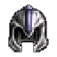 투구 | -2 | MR +4 | 철 | 35 | 0 | 0~4강 | |
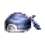 푸른 해적 두건 | -2 | 세트(4) INT +1, AC -1, 최대 HP +10 | 가죽 | 15 | 0 | 0~4강 | |
| -3 | 세트(3) AC -2, 최대 HP +10 | 뼈 | 30 | 0 | 0 |
갑옷52
| 아이템 | AC | 효과 | 재질 | 무게 | 클래스 | 착용레벨 | 안전인첸 |
|---|---|---|---|---|---|---|---|
| -2 | — | 가죽 | 70 | 0 | 0~4강 | ||
| 가죽 재킷 | -1 | — | 가죽 | 30 | 0 | 0~4강 | |
| 가죽조끼 | -1 | 세트(4) AC -3 | 가죽 | 30 | 0 | 0~4강 | |
| 강철 판금 갑옷 | -7 | 세트(5) AC -3 | 철 | 470 | 0 | 0~4강 | |
| -14 | HP회복 +3, MP회복 +5 | 가죽 | 180 | 40 | 인첸불가 | ||
| 고대의 로브 | -12 | MP회복 +8 | 천 | 30 | 40 | 인첸불가 | |
| -14 | HP회복 +5, MP회복 +3 | 용가죽 | 200 | 40 | 인첸불가 | ||
| -16 | HP회복 +1 | 철 | 280 | 40 | 인첸불가 | ||
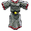 고리 갑옷 | -3 | — | 철 | 250 | 0 | 0~4강 | |
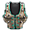 나무 갑옷 | -3 | — | 나무 | 80 | 0 | 0~4강 | |
| -1 | — | 나무 | 40 | 0 | 0~4강 | ||
| -7 | 세트(4) AC -4, 데스나이트 변신 | 철 | 250 | 0 | 0~4강 | ||
| -6 | — | 철 | 350 | 0 | 0~4강 | ||
| -11 | HP회복 +2, 대미지 감소 +1, 바람 속성 저항력 증가 +30 | 용가죽 | 250 | 0 | 0~4강 | ||
| -3 | 세트(2) MP회복 +1, 최대 MP +50 | 천 | 60 | 0 | 0~4강 | ||
| 맘보 코트 | -3 | CHA +2, STR -1, 물 속성 저항력 증가 +10, 불 속성 저항력 증가 -10 | 가죽 | 10 | 0 | 0~4강 | |
| -2 | MR +4 | 천 | 10 | 0 | 0~4강 | ||
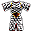 미늘 갑옷 | -6 | — | 철 | 400 | 0 | 0~4강 | |
| -8 | 세트(4) HP회복 +7, AC -3, 켄 라우헬 변신 | 금 | 180 | 0 | 0~4강 | ||
| -11 | HP회복 +2, 대미지 감소 +1, 불 속성 저항력 증가 +30 | 용가죽 | 250 | 0 | 0~4강 | ||
| -3 | — | 가죽 | 50 | 0 | 0~4강 | ||
| -4 | — | 철 | 250 | 0 | 0~4강 | ||
| -5 | 세트(3) AC -2, 최대 HP +10 | 뼈 | 150 | 0 | 0 | ||
| -5 | — | 철 | 300 | 0 | 0~4강 | ||
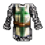 사슬 갑옷 | -5 | MR +4 | 철 | 300 | 0 | 0~4강 | |
| -9 | 물 속성 저항력 증가 +20 | 용가죽 | 300 | 0 | 0~4강 | ||
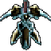 수정 갑옷 | -8 | — | 보석 | 350 | 0 | 0~4강 | |
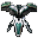 안타라스의 마갑주 | -11 | HP회복 +2, 대미지 감소 +1, 땅 속성 저항력 증가 +30 | 용가죽 | 250 | 0 | 0~4강 | |
| -2 | 세트(4) AC -3 | 철 | 250 | 0 | 0~4강 | ||
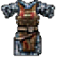 오크족 사슬 갑옷 | -4 | — | 철 | 300 | 0 | 0~4강 | |
| -5 | — | 미스릴 | 150 | 0 | 0~6강 | ||
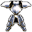 요정족 판금 갑옷 | -6 | — | 오리하루콘 | 250 | 0 | 0~6강 | |
| 요정족 흉갑 | -4 | — | 미스릴 | 100 | 0 | 0~6강 | |
| -1 | — | 가죽 | 200 | 40 | 인첸불가 | ||
| -1 | — | 천 | 50 | 40 | 인첸불가 | ||
| -1 | — | 용가죽 | 250 | 40 | 인첸불가 | ||
| 잊혀진 판금 갑옷 | -1 | — | 철 | 300 | 40 | 인첸불가 | |
| -3 | — | 가죽 | 150 | 0 | 0~4강 | ||
| -9 | 땅 속성 저항력 증가 +20 | 용가죽 | 300 | 0 | 0~4강 | ||
| -2 | 세트(4) AC -3 | 가죽 | 130 | 0 | 0~4강 | ||
| 징박힌 가죽 갑옷 | -3 | — | 가죽 | 150 | 0 | 0~4강 | |
| -7 | 세트(4) AC -7 | 가죽 | 160 | 0 | 0~4강 | ||
| -6 | — | 구리 | 450 | 0 | 0~4강 | ||
| 커츠의 갑옷 | -7 | 세트(4) AC -4, 커츠 변신 | 철 | 250 | 0 | 0~4강 | |
| -5 | 세트(4) MP회복 +12, AC -2, 최대 MP +100, 케레니스 변신 | 은 | 85 | 0 | 0~4강 | ||
| 파푸리온의 마갑주 | -11 | HP회복 +2, 대미지 감소 +1, 물 속성 저항력 증가 +30 | 용가죽 | 250 | 0 | 0~4강 | |
| -7 | — | 철 | 450 | 0 | 0~4강 | ||
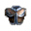 푸른 해적 가죽갑옷 | -5 | 세트(4) INT +1, AC -1, 최대 HP +10 | 가죽 | 150 | 0 | 0~4강 | |
| 풍룡 비늘 갑옷 | -9 | 바람 속성 저항력 증가 +20 | 용가죽 | 300 | 0 | 0~4강 | |
| 호박 갑옷 | -6 | HP회복 +3, MP회복 +2, 최대 HP +10, 최대 MP +10 | 나무 | 220 | 0 | 0~4강 | |
| -9 | 불 속성 저항력 증가 +20 | 용가죽 | 300 | 0 | 0~4강 | ||
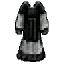 흑장로의 로브 | -5 | MP회복 +5, 최대 MP +50 | 천 | 30 | 0 | 0~4강 |
티셔츠2
| 아이템 | AC | 효과 | 재질 | 무게 | 클래스 | 착용레벨 | 안전인첸 |
|---|---|---|---|---|---|---|---|
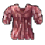 요정족 티셔츠 | 0 | — | 천 | 5 | 0 | 0~6강 | |
| 티셔츠 | 0 | 갑옷 안 착용 | 천 | 5 | 0 | 0~4강 |
망토11
| 아이템 | AC | 효과 | 재질 | 무게 | 클래스 | 착용레벨 | 안전인첸 |
|---|---|---|---|---|---|---|---|
| -2 | CHA +1, CON +1, DEX +1, INT +1, STR +1, WIS +1 | 천 | 10 | 15 | 0~4강 | ||
| 0 | 세트(3) AC -1, 최대 HP +5 | 천 | 10 | 0 | 0~4강 | ||
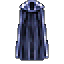 마나 망토 | -2 | MP회복 +5 | 천 | 10 | 45 | 0~4강 | |
| 마법 망토 | -1 | MR +10 | 천 | 10 | 0 | 0~4강 | |
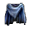 바다의 망토 | -2 | CHA +1 | 천 | 10 | 0 | 0~4강 | |
| -2 | HP회복 +4, MR +3, 최대 HP +60 | 천 | 15 | 50 | 0~6강 | ||
| -3 | — | 천 | 10 | 0 | 0~4강 | ||
| -2 | CHA +1 | 천 | 10 | 15 | 0~4강 | ||
| 오크족 망토 | 0 | 세트(4) AC -3 | 천 | 10 | 0 | 0~4강 | |
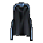 요정족 망토 | -1 | 요정 착용 시 HP회복 보너스 +1 | 천 | 10 | 0 | 0~6강 | |
| 투명 망토 | -1 | 투명 | 천 | 10 | 5 | 0~4강 |
부츠18
| 아이템 | AC | 효과 | 재질 | 무게 | 클래스 | 착용레벨 | 안전인첸 |
|---|---|---|---|---|---|---|---|
| -2 | — | 가죽 | 10 | 0 | 0~4강 | ||
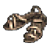 가죽샌달 | 0 | 세트(4) AC -3 | 가죽 | 8 | 0 | 0~4강 | |
| -3 | 세트(5) AC -3 | 철 | 50 | 0 | 0~4강 | ||
| -3 | 세트(4) AC -4, 데스나이트 변신 | 철 | 15 | 0 | 0~4강 | ||
| -3 | MP회복 +2 | 가죽 | 15 | 0 | 0~4강 | ||
| -3 | 세트(4) HP회복 +7, AC -3, 켄 라우헬 변신 | 금 | 12 | 0 | 0~4강 | ||
| -2 | — | 가죽 | 15 | 0 | 0~4강 | ||
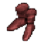 세피아의 부츠 | -3 | 원거리 명중 +1 | 가죽 | 15 | 0 | 0~4강 | |
| -2 | MP회복 +1, 수중 호흡 가능 | 가죽 | 15 | 0 | 0~4강 | ||
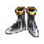 신의의 부츠 | -3 | CHA +1 | 가죽 | 15 | 0 | 0~4강 | |
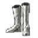 용기의 부츠 | -3 | 근거리 명중 +1 | 가죽 | 15 | 0 | 0~4강 | |
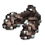 징박은 가죽샌달 | -1 | 세트(4) AC -3 | 가죽 | 10 | 0 | 0~4강 | |
| -3 | 세트(4) AC -7 | 가죽 | 20 | 0 | 0~4강 | ||
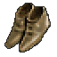 짧은 부츠 | -1 | — | 가죽 | 10 | 0 | 0~4강 | |
| -3 | 세트(4) AC -4, 커츠 변신 | 철 | 15 | 0 | 0~4강 | ||
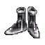 케레니스의 부츠 | -2 | 세트(4) MP회복 +12, AC -2, 최대 MP +100, 케레니스 변신 | 가죽 | 15 | 0 | 0~4강 | |
| -2 | 세트(4) INT +1, AC -1, 최대 HP +10 | 가죽 | 15 | 0 | 0~4강 | ||
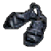 흑장로의 샌달 | -2 | MP회복 +5, 최대 MP +25 | 가죽 | 10 | 0 | 0~4강 |
장갑17
| 아이템 | AC | 효과 | 재질 | 무게 | 클래스 | 착용레벨 | 안전인첸 |
|---|---|---|---|---|---|---|---|
| -1 | 세트(5) AC -3 | 철 | 40 | 0 | 0~4강 | ||
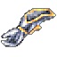 데스나이트의 장갑 | -2 | 세트(4) AC -4, 데스나이트 변신 | 철 | 15 | 0 | 0~4강 | |
| -3 | 대미지 감소 +1 | 광물 | 50 | 0 | 0~4강 | ||
| -2 | 세트(4) HP회복 +7, AC -3, 켄 라우헬 변신 | 금 | 10 | 0 | 0~4강 | ||
| 보호 장갑 | 0 | 최대 HP +20, 최대 MP +10 | 가죽 | 10 | 45 | 0~4강 | |
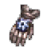 빙령의 장갑 | 0 | MP회복 +1, STR +1, 물 속성 저항력 증가 +4 | 가죽 | 18 | 0 | 0~4강 | |
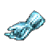 수정 장갑 | -3 | — | 보석 | 20 | 0 | 0~4강 | |
| 암령의 장갑 | 0 | MP회복 +1, STR +1, 땅 속성 저항력 증가 +4 | 가죽 | 18 | 0 | 0~4강 | |
| 0 | MP회복 +1, STR +1, 불 속성 저항력 증가 +4 | 가죽 | 18 | 0 | 0~4강 | ||
| 0 | — | 가죽 | 10 | 0 | 0~4강 | ||
| -2 | 세트(4) AC -7 | 가죽 | 20 | 0 | 0~4강 | ||
| -2 | 세트(4) AC -4, 커츠 변신 | 철 | 15 | 0 | 0~4강 | ||
| 케레니스의 장갑 | -1 | 세트(4) MP회복 +12, AC -2, 최대 MP +100, 케레니스 변신 | 가죽 | 8 | 0 | 0~4강 | |
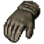 파워 글로브 | 0 | STR +2 | 가죽 | 18 | 0 | 0~4강 | |
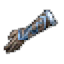 푸른 해적 장갑 | -1 | 세트(4) INT +1, AC -1, 최대 HP +10 | 가죽 | 15 | 0 | 0~4강 | |
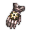 풍령의 장갑 | 0 | MP회복 +1, STR +1, 바람 속성 저항력 증가 +4 | 가죽 | 18 | 0 | 0~4강 | |
| 0 | 원거리 명중 +2 | 가죽 | 10 | 0 | 0~4강 |
방패20
| 아이템 | AC | 효과 | 재질 | 무게 | 클래스 | 착용레벨 | 안전인첸 |
|---|---|---|---|---|---|---|---|
| -1 | 세트(4) AC -3 | 가죽 | 25 | 0 | 0~4강 | ||
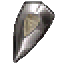 강철 방패 | -3 | 세트(5) AC -3 | 철 | 140 | 0 | 0~4강 | |
| -3 | 세트(3) AC -2, 최대 HP +10 | 뼈 | 30 | 0 | 0 | ||
| -1 | — | 나무 | 25 | 0 | 0~4강 | ||
| 난쟁이족 둥근 방패 | -2 | 세트(3) AC -1, 최대 HP +5 | 철 | 100 | 0 | 0~4강 | |
| -2 | INT +1, 최대 MP +100 | 유리 | 50 | 0 | 0~4강 | ||
| -2 | INT +1 | 종이 | 20 | 15 | 0~4강 | ||
| -2 | MR +5, 반사 효과 | 은 | 80 | 0 | 0~4강 | ||
| -2 | 반사 효과 | 은 | 50 | 0 | 0~4강 | ||
| -2 | 반사 효과 | 은 | 50 | 0 | 0~6강 | ||
| -3 | — | 철 | 120 | 0 | 0~4강 | ||
| -2 | INT +1, MP회복 +2, 반사 효과, 최대 MP +100 | 동물성 | 50 | 50 | 0~6강 | ||
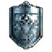 에바의 방패 | -3 | 최대 HP +20, 헤이스트효과 | 은 | 50 | 40 | 0~4강 | |
| 요정족 방패 | -2 | 요정 착용 시 MR 보너스 +5 | 은 | 50 | 0 | 0~6강 | |
| 우럭하이 방패 | -1 | 세트(4) AC -3 | 철 | 50 | 0 | 0~4강 | |
| -2 | MR +4 | 은 | 100 | 0 | 0~4강 | ||
| -1 | — | 나무 | 30 | 0 | 0~4강 | ||
| -1 | — | 종이 | 0 | 15 | 인첸불가 | ||
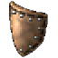 징박은 가죽방패 | -2 | 세트(4) AC -3 | 가죽 | 35 | 0 | 0~4강 | |
| 큰 방패 | -2 | — | 철 | 100 | 0 | 0~4강 |